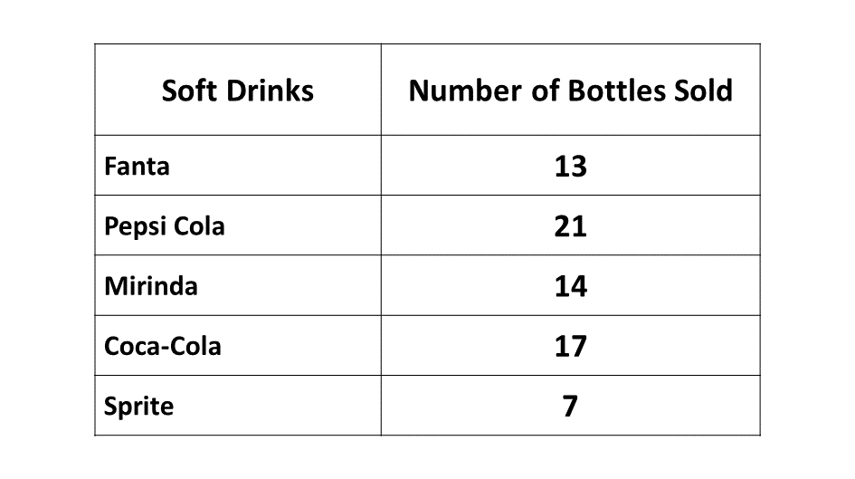

GUIDE (BECE - 1994)
You have 60 minutes for each section. Try to work on your speed as you prepare towards the final exam.
Good luck and remember to check your answers with the solutions provided. If you have any questions, feel free to ask your teacher or refer to the video lessons for more help.
Section A - Multiple Choice Questions
This section contains 40 multiple choice questions. You have 60 minutes to complete it.
Each question has four options labeled A to D. Select the correct answer for each question.

Section B
Question 1
-
Multiply \((a - b)\) by \((2b - a)\)
-
Find the truth set of \(2x - 6 \le 5(3 - x)\)
Illustrate your answer on a number line. -
Given that \(\mathbf{u}=\begin{pmatrix}-2 \\ 3 \end{pmatrix}\) and \(\mathbf{v}=\begin{pmatrix}2 \\ 6 \end{pmatrix}\), find \(\frac{1}{3}\left( \mathbf{u}+\frac{1}{2}\mathbf{v} \right)\).
Question 1a
\((a - b)(2b - a)\)
\(\Rightarrow a(2b - a) - b(2b - a)\)
\(\Rightarrow 2ab - a^2 - 2b^2 + ab\)
\(\Rightarrow 2ab + ab - a^2 - 2b^2\)
\(\Rightarrow 3ab - a^2 - 2b^2\)
Question 1b
\(2x - 6 \le 5(3 - x)\)
\(\Rightarrow 2x - 6 \le 15 - 5x\)
\(\Rightarrow 2x + 5x\le 15 + 6 \)
\(\Rightarrow \hspace{0.8cm} 7x \le 21 \)
dividing both sides by the coefficient
\(\Rightarrow \hspace{0.8cm} \dfrac{7x}{7} \le \dfrac{21}{7} \)
\(\Rightarrow \hspace{1cm} x \le 3 \)
\(\therefore\) the truth set is \(\{x:x \le 3}\).
Illustrating on the number line
Question 1c
\(\mathbf{u}=\begin{pmatrix}-2 \ 3 \end{pmatrix}\)
\(\mathbf{v}=\begin{pmatrix}2 \ 6 \end{pmatrix}\)
Hence, \(\frac{1}{3}\left( \mathbf{u}+\frac{1}{2}\mathbf{v} \right)\)
\(\Rightarrow \frac{1}{3}\begin{pmatrix} \begin{pmatrix}-2 \ 3 \end{pmatrix} + \frac{1}{2}\begin{pmatrix}2 \ 6 \end{pmatrix} \end{pmatrix}\)
\(\Rightarrow \frac{1}{3}\begin{pmatrix} \begin{pmatrix}-2 \ 3 \end{pmatrix} + \begin{pmatrix}1 \ 3 \end{pmatrix} \end{pmatrix}\)
\(\Rightarrow \frac{1}{3}\begin{pmatrix} -2 + 1 \ 3 + 3 \end{pmatrix}\)
\(\Rightarrow \frac{1}{3}\begin{pmatrix} -1 \ 6 \end{pmatrix}\)
\(\Rightarrow\) \( \begin{pmatrix} -\frac{1}{3} \ 2 \end{pmatrix} \)
Question 2
-
A ladder leans against a wall. The end of the ladder touches the wall 12 m from the ground. The foot of the ladder is 9 m away from the foot of the wall.
\((i)\) What is the length of the ladder?
\((ii)\) Calculate the angle that the ladder makes with the ground.
-
Given that \(\pi = 3.14\) and \(g = 20\), find the value of \(F\) in the Relation \(F = \dfrac{3\pi g^2}{4}\)
Solution
Question 2a.i
Length of wall = 12 m
Distance from foot to wall = 9 m
Let the length of the ladder = \(x\)
Using Pythagoras theroem:
\(\Rightarrow x^2 = 12^2 + 9^2\)
\(\Rightarrow x^2 = 144 + 81\)
\(\Rightarrow x^2 = 225\)
\(\Rightarrow x = \sqrt{225}\)
\(\Rightarrow x = \sqrt{15^2}\)
\(\Rightarrow x = 15\) m
\(\therefore\) the ladder is 15 m long.
Question 2a.ii
let the angle = \(\theta\)
\(\Rightarrow tan \ \theta = \dfrac{opp}{adj}\)
\(\Rightarrow tan \ \theta = \dfrac{12}{9}\)
\(\Rightarrow tan \ \theta = \dfrac{3 \times 4}{3 \times 3}\)
\(\Rightarrow tan \ \theta = \dfrac{4}{3}\)
\(\Rightarrow \theta = tan^{-1}\left(\frac{4}{3}\right) \)
\(\therefore\) the angle is \(tan^{-1}\left(\frac{4}{3}\right) \)
Solution
\(\pi = 3.14\)
\(g = 20\)
\(F = \dfrac{3\pi g^2}{4}\)
Substituting \(\pi\) and \(g\) into the equation:
\(\Rightarrow F = \dfrac{3 \times 3.14 \times 20^2}{4}\)
\(\Rightarrow F = \dfrac{9.42 \times 400}{4}\)
\(\Rightarrow F = \dfrac{9.42 \times 4 \times 100}{4}\)
\(\Rightarrow F = 9.42 \times 100\)
\(\Rightarrow F = 942\)
\(\therefore F\) is \(942\)
Question 3
-
Construct triangle \(PQR\) in which \(|PQ| =\) 8 cm, \(\angle QPR = 45^\circ\) and \(\angle PQR = 90^\circ\). Measure \(|QR|\).
-
Construct the mediator of \(PQ\) to meet \(PR\) at the point \(S\). With \(S\) as center and radius 3 cm, construct a circle.
Using a ruler and a pair of compasses only;
Solution
Question 4
-
Using a scale of 2 cm to 1 unit on both axes, draw two perpendicular lines \(Ox\) and \(Oy\) on a graph sheet, mark the \(x-\)axis from \(-5\) to \(5\), and \(y-\)axis \(-6\) to \(6\). Mark the origin \(O\).
-
\((i)\) Draw on the same graph sheet indicating in each case the coordinates of all vertices of the square \(ABCD\) where \(A(1, 2)\), \(B(4, 2)\), \(C(4, 5)\) and \(D(1, 5)\) are the respective points.
-
\((ii)\) Using the \(y-\)axis as a mirror line draw the image \(A_1B_1C_1D_1\) of square \(ABCD\) where \(A \rightarrow A_1\), \(B \rightarrow B_1\), \(C \rightarrow C_1\), \(D \rightarrow D_1\)
-
\((iii)\) Draw the enlargement \(A_2B_2C_2D_2\) of the square with scale factor \(-1\) from \(O\), such that \(A \rightarrow A_2\), \(B \rightarrow B_2\), \(C \rightarrow C_2\), \(D \rightarrow D_2\).
-
\((iv)\) What single tranformation maps \(A_2B_2C_2D_2\) to \(A_1B_1C_1D_1\)?
Solution
Question 5
The following shows the distribution of sales of soft drinks sold by Jatokrom JSS canteen in one week.
Draw a pie chart to illustrate the sales.
Solution